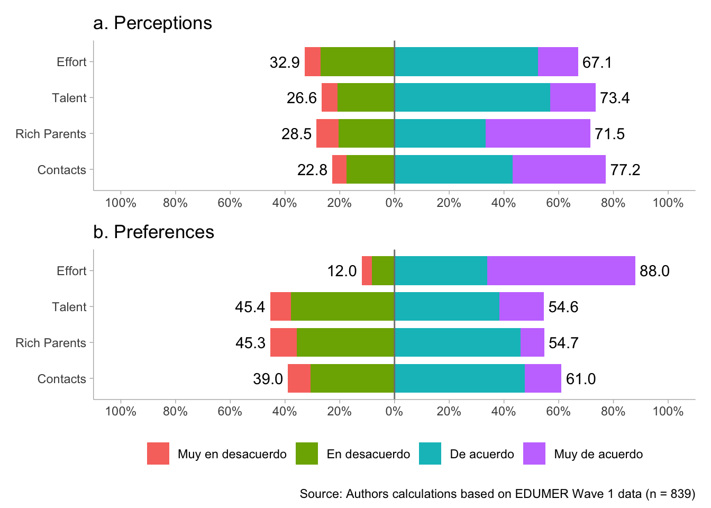
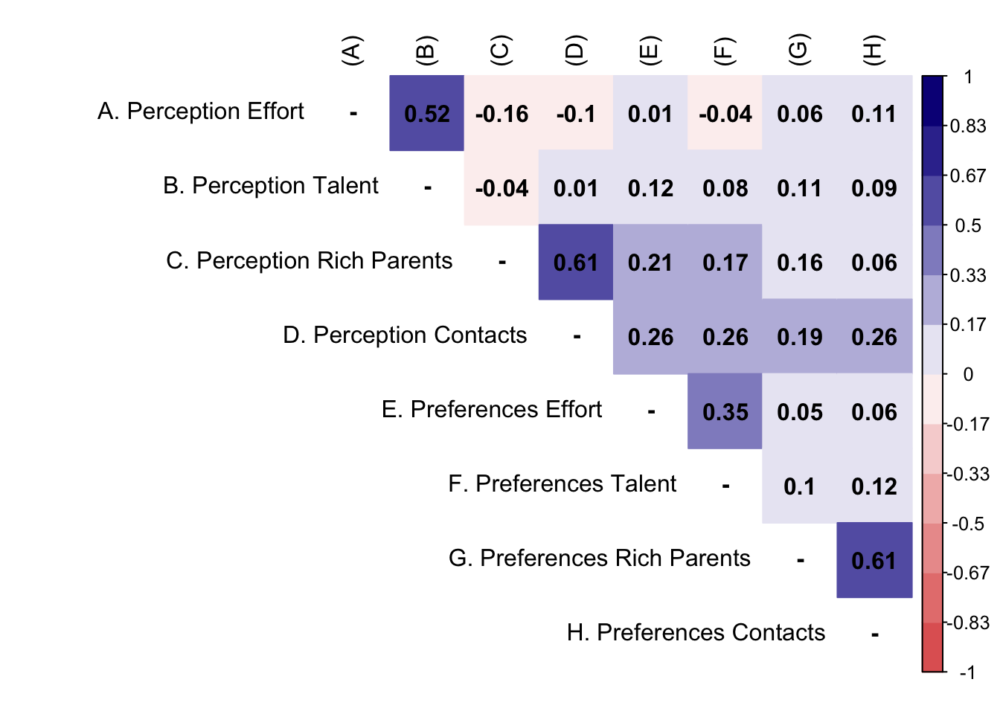

1 Librerías
2 Datos
3 Analísis
3.1 Descriptivos
db1 %>%
psych::describe() %>%
as.data.frame() %>%
dplyr::select("Mean"=mean,"SD"=sd,"Min"=min,"Max"=max) %>%
round(.,2) Mean SD Min Max
curse_level* 1.52 0.50 1 2
perc_effort 2.76 0.77 1 4
perc_talent 2.84 0.76 1 4
perc_rich_parents 3.02 0.95 1 4
perc_contact 3.06 0.85 1 4
pref_effort 3.38 0.79 1 4
pref_talent 2.63 0.84 1 4
pref_rich_parents 2.54 0.78 1 4
pref_contact 2.66 0.81 1 4
just_educ 2.28 0.89 1 4
just_health 2.00 0.94 1 4
just_pension 2.05 0.87 1 4
mjp 2.11 0.75 1 4a <- db1 %>%
select(starts_with("perc")) %>%
sjPlot::plot_likert(geom.colors = "Rdb1u",
title = c("a. Perceptions"),
geom.size = 0.8,
axis.labels = c("Effort", "Talent", "Rich Parents", "Contacts"),
catcount = 4,
values = "sum.outside",
reverse.colors = F,
reverse.scale = T,
show.n = FALSE
) +
ggplot2::theme(legend.position = "none")
b <- db1 %>%
select(starts_with("pref")) %>%
sjPlot::plot_likert(geom.colors = "Rdb1u",
title = c("b. Preferences"),
geom.size = 0.8,
axis.labels = c("Effort", "Talent", "Rich Parents", "Contacts"),
catcount = 4,
values = "sum.outside",
reverse.colors = F,
reverse.scale = T,
show.n = FALSE
) +
ggplot2::theme(legend.position = "bottom")
likerplot <- a / b + plot_annotation(caption = paste0("Source: Authors calculations based on EDUMER Wave 1 data"," (n = ",dim(db1)[1],")"
))
likerplot

3.2 Bivariados
M <- psych::polychoric(db1[c(2:9,13)])
P <- cor(db1[c(2:9,13)], method = "spearman")
diag(M$rho) <- NA
diag(P) <- NA
M$rho[9,] <- P[9,]
rownames(M$rho) <- c("A. Perception Effort",
"B. Perception Talent",
"C. Perception Rich Parents",
"D. Perception Contacts",
"E. Preferences Effort",
"F. Preferences Talent",
"G. Preferences Rich Parents",
"H. Preferences Contacts",
"I. Market Justice Preferences")
#set Column names of the matrix
colnames(M$rho) <-c("(A)", "(B)","(C)","(D)","(E)","(F)","(G)",
"(H)","(I)")
rownames(P) <- c("A. Perception Effort",
"B. Perception Talent",
"C. Perception Rich Parents",
"D. Perception Contacts",
"E. Preferences Effort",
"F. Preferences Talent",
"G. Preferences Rich Parents",
"H. Preferences Contacts",
"I. Market Justice Preferences")
#set Column names of the matrix
colnames(P) <-c("(A)", "(B)","(C)","(D)","(E)","(F)","(G)",
"(H)","(I)")
testp <- cor.mtest(M$rho, conf.level = 0.95)
#Plot the matrix using corrplot
corrplot::corrplot(M$rho,
method = "color",
addCoef.col = "black",
type = "upper",
tl.col = "black",
col = colorRampPalette(c("#E16462", "white", "#0D0887"))(12),
bg = "white",
na.label = "-")

matriz <- db1 %>% select(just_health,just_pension, just_educ)
matriz_poly <- polychoric(matriz)
psych::alpha(matriz_poly$rho) # coef = 0.83
Reliability analysis
Call: psych::alpha(x = matriz_poly$rho)
raw_alpha std.alpha G6(smc) average_r S/N median_r
0.83 0.83 0.77 0.61 4.7 0.66
95% confidence boundaries
lower alpha upper
Feldt -0.85 0.83 1
Reliability if an item is dropped:
raw_alpha std.alpha G6(smc) average_r S/N var.r med.r
just_health 0.68 0.68 0.51 0.51 2.1 NA 0.51
just_pension 0.80 0.80 0.67 0.67 4.0 NA 0.67
just_educ 0.79 0.79 0.66 0.66 3.9 NA 0.66
Item statistics
r r.cor r.drop
just_health 0.90 0.84 0.76
just_pension 0.84 0.71 0.64
just_educ 0.84 0.72 0.653.3 Multivariados
3.3.1 CFA
# model
model_cfa <- '
perc_merit = ~ perc_effort + perc_talent
perc_nmerit = ~ perc_rich_parents + perc_contact
pref_merit = ~ pref_effort + pref_talent
pref_nmerit = ~ pref_rich_parents + pref_contact
'
# estimation for each order set
m1_cfa <- cfa(model = model_cfa,
data = db1,
estimator = "MLR",
std.lv = F) # Continuous/ estimator ML Robust
m2_cfa <- cfa(model = model_cfa,
data = db1,
estimator = "DWLS",
ordered = T,
std.lv = F)
summary(m2_cfa, fit.measures = T, standardized = T) lavaan 0.6.15 ended normally after 43 iterations
Estimator DWLS
Optimization method NLMINB
Number of model parameters 38
Number of observations 839
Model Test User Model:
Test statistic 39.183
Degrees of freedom 14
P-value (Chi-square) 0.000
Model Test Baseline Model:
Test statistic 2412.306
Degrees of freedom 28
P-value 0.000
User Model versus Baseline Model:
Comparative Fit Index (CFI) 0.989
Tucker-Lewis Index (TLI) 0.979
Root Mean Square Error of Approximation:
RMSEA 0.046
90 Percent confidence interval - lower 0.030
90 Percent confidence interval - upper 0.064
P-value H_0: RMSEA <= 0.050 0.608
P-value H_0: RMSEA >= 0.080 0.001
Standardized Root Mean Square Residual:
SRMR 0.038
Parameter Estimates:
Standard errors Standard
Information Expected
Information saturated (h1) model Unstructured
Latent Variables:
Estimate Std.Err z-value P(>|z|) Std.lv Std.all
perc_merit =~
perc_effort 1.000 0.843 0.843
perc_talent 0.734 0.225 3.258 0.001 0.619 0.619
perc_nmerit =~
perc_rch_prnts 1.000 0.645 0.645
perc_contact 1.465 0.200 7.318 0.000 0.944 0.944
pref_merit =~
pref_effort 1.000 0.609 0.609
pref_talent 0.967 0.153 6.305 0.000 0.589 0.589
pref_nmerit =~
pref_rch_prnts 1.000 0.747 0.747
pref_contact 1.101 0.183 6.013 0.000 0.822 0.822
Covariances:
Estimate Std.Err z-value P(>|z|) Std.lv Std.all
perc_merit ~~
perc_nmerit -0.071 0.019 -3.767 0.000 -0.131 -0.131
pref_merit 0.034 0.022 1.509 0.131 0.065 0.065
pref_nmerit 0.100 0.024 4.099 0.000 0.158 0.158
perc_nmerit ~~
pref_merit 0.179 0.027 6.559 0.000 0.455 0.455
pref_nmerit 0.132 0.022 5.952 0.000 0.273 0.273
pref_merit ~~
pref_nmerit 0.083 0.021 3.912 0.000 0.183 0.183
Intercepts:
Estimate Std.Err z-value P(>|z|) Std.lv Std.all
.perc_effort 0.000 0.000 0.000
.perc_talent 0.000 0.000 0.000
.perc_rch_prnts 0.000 0.000 0.000
.perc_contact 0.000 0.000 0.000
.pref_effort 0.000 0.000 0.000
.pref_talent 0.000 0.000 0.000
.pref_rch_prnts 0.000 0.000 0.000
.pref_contact 0.000 0.000 0.000
perc_merit 0.000 0.000 0.000
perc_nmerit 0.000 0.000 0.000
pref_merit 0.000 0.000 0.000
pref_nmerit 0.000 0.000 0.000
Thresholds:
Estimate Std.Err z-value P(>|z|) Std.lv Std.all
perc_effort|t1 -1.558 0.069 -22.577 0.000 -1.558 -1.558
perc_effort|t2 -0.443 0.045 -9.867 0.000 -0.443 -0.443
perc_effort|t3 1.051 0.053 19.752 0.000 1.051 1.051
perc_talent|t1 -1.568 0.069 -22.580 0.000 -1.568 -1.568
perc_talent|t2 -0.626 0.047 -13.448 0.000 -0.626 -0.626
perc_talent|t3 0.976 0.052 18.884 0.000 0.976 0.976
prc_rch_prnt|1 -1.406 0.063 -22.292 0.000 -1.406 -1.406
prc_rch_prnt|2 -0.568 0.046 -12.375 0.000 -0.568 -0.568
prc_rch_prnt|3 0.299 0.044 6.787 0.000 0.299 0.299
perc_contct|t1 -1.622 0.072 -22.559 0.000 -1.622 -1.622
perc_contct|t2 -0.747 0.048 -15.561 0.000 -0.747 -0.747
perc_contct|t3 0.410 0.045 9.185 0.000 0.410 0.410
pref_effort|t1 -1.773 0.080 -22.210 0.000 -1.773 -1.773
pref_effort|t2 -1.173 0.056 -20.922 0.000 -1.173 -1.173
pref_effort|t3 -0.103 0.043 -2.380 0.017 -0.103 -0.103
pref_talent|t1 -1.431 0.064 -22.370 0.000 -1.431 -1.431
pref_talent|t2 -0.115 0.043 -2.656 0.008 -0.115 -0.115
pref_talent|t3 0.981 0.052 18.944 0.000 0.981 0.981
prf_rch_prnt|1 -1.309 0.060 -21.858 0.000 -1.309 -1.309
prf_rch_prnt|2 -0.118 0.043 -2.725 0.006 -0.118 -0.118
prf_rch_prnt|3 1.359 0.061 22.110 0.000 1.359 1.359
pref_contct|t1 -1.382 0.062 -22.205 0.000 -1.382 -1.382
pref_contct|t2 -0.280 0.044 -6.375 0.000 -0.280 -0.280
pref_contct|t3 1.110 0.055 20.356 0.000 1.110 1.110
Variances:
Estimate Std.Err z-value P(>|z|) Std.lv Std.all
.perc_effort 0.290 0.290 0.290
.perc_talent 0.617 0.617 0.617
.perc_rch_prnts 0.584 0.584 0.584
.perc_contact 0.108 0.108 0.108
.pref_effort 0.629 0.629 0.629
.pref_talent 0.654 0.654 0.654
.pref_rch_prnts 0.442 0.442 0.442
.pref_contact 0.324 0.324 0.324
perc_merit 0.710 0.221 3.219 0.001 1.000 1.000
perc_nmerit 0.416 0.059 7.026 0.000 1.000 1.000
pref_merit 0.371 0.068 5.425 0.000 1.000 1.000
pref_nmerit 0.558 0.095 5.895 0.000 1.000 1.000
Scales y*:
Estimate Std.Err z-value P(>|z|) Std.lv Std.all
perc_effort 1.000 1.000 1.000
perc_talent 1.000 1.000 1.000
perc_rch_prnts 1.000 1.000 1.000
perc_contact 1.000 1.000 1.000
pref_effort 1.000 1.000 1.000
pref_talent 1.000 1.000 1.000
pref_rch_prnts 1.000 1.000 1.000
pref_contact 1.000 1.000 1.000cnames <- c("Factor","Indicator","Loading (MLR)","Loading (DWLS)")
kable(left_join(x = standardizedsolution(m1_cfa) %>%
filter(op=="=~") %>%
select(lhs,rhs,est.std),y = standardizedsolution(m2_cfa) %>%
filter(op=="=~") %>%
select(lhs,rhs,est.std),c("lhs","rhs")),
format = "markdown",digits = 2,col.names = cnames, caption = "Factor loadings")| Factor | Indicator | Loading (MLR) | Loading (DWLS) |
|---|---|---|---|
| perc_merit | perc_effort | 0.88 | 0.84 |
| perc_merit | perc_talent | 0.50 | 0.62 |
| perc_nmerit | perc_rich_parents | 0.58 | 0.64 |
| perc_nmerit | perc_contact | 0.89 | 0.94 |
| pref_merit | pref_effort | 0.51 | 0.61 |
| pref_merit | pref_talent | 0.55 | 0.59 |
| pref_nmerit | pref_rich_parents | 0.66 | 0.75 |
| pref_nmerit | pref_contact | 0.82 | 0.82 |
3.3.2 CFA Ola 1 y 2
## Modelos por separado para basica y media
fit.conf <- cfa(model = model_cfa,
data = db_long,
group = "ola",
estimator = "DWLS",
ordered = T,
std.lv = F)
summary(fit.conf, fit.measures = T, standardized = T) lavaan 0.6.15 ended normally after 73 iterations
Estimator DWLS
Optimization method NLMINB
Number of model parameters 76
Number of observations per group:
1 839
2 612
Model Test User Model:
Test statistic 84.780
Degrees of freedom 28
P-value (Chi-square) 0.000
Test statistic for each group:
1 39.183
2 45.597
Model Test Baseline Model:
Test statistic 4505.007
Degrees of freedom 56
P-value 0.000
User Model versus Baseline Model:
Comparative Fit Index (CFI) 0.987
Tucker-Lewis Index (TLI) 0.974
Root Mean Square Error of Approximation:
RMSEA 0.053
90 Percent confidence interval - lower 0.040
90 Percent confidence interval - upper 0.066
P-value H_0: RMSEA <= 0.050 0.335
P-value H_0: RMSEA >= 0.080 0.000
Standardized Root Mean Square Residual:
SRMR 0.043
Parameter Estimates:
Standard errors Standard
Information Expected
Information saturated (h1) model Unstructured
Group 1 [1]:
Latent Variables:
Estimate Std.Err z-value P(>|z|) Std.lv Std.all
perc_merit =~
perc_effort 1.000 0.843 0.843
perc_talent 0.734 0.225 3.258 0.001 0.619 0.619
perc_nmerit =~
perc_rch_prnts 1.000 0.645 0.645
perc_contact 1.465 0.200 7.317 0.000 0.944 0.944
pref_merit =~
pref_effort 1.000 0.609 0.609
pref_talent 0.967 0.153 6.304 0.000 0.589 0.589
pref_nmerit =~
pref_rch_prnts 1.000 0.747 0.747
pref_contact 1.101 0.183 6.013 0.000 0.822 0.822
Covariances:
Estimate Std.Err z-value P(>|z|) Std.lv Std.all
perc_merit ~~
perc_nmerit -0.071 0.019 -3.767 0.000 -0.131 -0.131
pref_merit 0.034 0.022 1.509 0.131 0.065 0.065
pref_nmerit 0.100 0.024 4.098 0.000 0.158 0.158
perc_nmerit ~~
pref_merit 0.179 0.027 6.559 0.000 0.455 0.455
pref_nmerit 0.132 0.022 5.952 0.000 0.273 0.273
pref_merit ~~
pref_nmerit 0.083 0.021 3.911 0.000 0.183 0.183
Intercepts:
Estimate Std.Err z-value P(>|z|) Std.lv Std.all
.perc_effort 0.000 0.000 0.000
.perc_talent 0.000 0.000 0.000
.perc_rch_prnts 0.000 0.000 0.000
.perc_contact 0.000 0.000 0.000
.pref_effort 0.000 0.000 0.000
.pref_talent 0.000 0.000 0.000
.pref_rch_prnts 0.000 0.000 0.000
.pref_contact 0.000 0.000 0.000
perc_merit 0.000 0.000 0.000
perc_nmerit 0.000 0.000 0.000
pref_merit 0.000 0.000 0.000
pref_nmerit 0.000 0.000 0.000
Thresholds:
Estimate Std.Err z-value P(>|z|) Std.lv Std.all
perc_effort|t1 -1.558 0.069 -22.575 0.000 -1.558 -1.558
perc_effort|t2 -0.443 0.045 -9.866 0.000 -0.443 -0.443
perc_effort|t3 1.051 0.053 19.751 0.000 1.051 1.051
perc_talent|t1 -1.568 0.069 -22.577 0.000 -1.568 -1.568
perc_talent|t2 -0.626 0.047 -13.447 0.000 -0.626 -0.626
perc_talent|t3 0.976 0.052 18.883 0.000 0.976 0.976
prc_rch_prnt|1 -1.406 0.063 -22.290 0.000 -1.406 -1.406
prc_rch_prnt|2 -0.568 0.046 -12.374 0.000 -0.568 -0.568
prc_rch_prnt|3 0.299 0.044 6.787 0.000 0.299 0.299
perc_contct|t1 -1.622 0.072 -22.557 0.000 -1.622 -1.622
perc_contct|t2 -0.747 0.048 -15.560 0.000 -0.747 -0.747
perc_contct|t3 0.410 0.045 9.184 0.000 0.410 0.410
pref_effort|t1 -1.773 0.080 -22.208 0.000 -1.773 -1.773
pref_effort|t2 -1.173 0.056 -20.920 0.000 -1.173 -1.173
pref_effort|t3 -0.103 0.043 -2.380 0.017 -0.103 -0.103
pref_talent|t1 -1.431 0.064 -22.368 0.000 -1.431 -1.431
pref_talent|t2 -0.115 0.043 -2.656 0.008 -0.115 -0.115
pref_talent|t3 0.981 0.052 18.942 0.000 0.981 0.981
prf_rch_prnt|1 -1.309 0.060 -21.856 0.000 -1.309 -1.309
prf_rch_prnt|2 -0.118 0.043 -2.725 0.006 -0.118 -0.118
prf_rch_prnt|3 1.359 0.061 22.108 0.000 1.359 1.359
pref_contct|t1 -1.382 0.062 -22.203 0.000 -1.382 -1.382
pref_contct|t2 -0.280 0.044 -6.374 0.000 -0.280 -0.280
pref_contct|t3 1.110 0.055 20.354 0.000 1.110 1.110
Variances:
Estimate Std.Err z-value P(>|z|) Std.lv Std.all
.perc_effort 0.290 0.290 0.290
.perc_talent 0.617 0.617 0.617
.perc_rch_prnts 0.584 0.584 0.584
.perc_contact 0.108 0.108 0.108
.pref_effort 0.629 0.629 0.629
.pref_talent 0.654 0.654 0.654
.pref_rch_prnts 0.442 0.442 0.442
.pref_contact 0.324 0.324 0.324
perc_merit 0.710 0.221 3.219 0.001 1.000 1.000
perc_nmerit 0.416 0.059 7.025 0.000 1.000 1.000
pref_merit 0.371 0.068 5.424 0.000 1.000 1.000
pref_nmerit 0.558 0.095 5.894 0.000 1.000 1.000
Scales y*:
Estimate Std.Err z-value P(>|z|) Std.lv Std.all
perc_effort 1.000 1.000 1.000
perc_talent 1.000 1.000 1.000
perc_rch_prnts 1.000 1.000 1.000
perc_contact 1.000 1.000 1.000
pref_effort 1.000 1.000 1.000
pref_talent 1.000 1.000 1.000
pref_rch_prnts 1.000 1.000 1.000
pref_contact 1.000 1.000 1.000
Group 2 [2]:
Latent Variables:
Estimate Std.Err z-value P(>|z|) Std.lv Std.all
perc_merit =~
perc_effort 1.000 0.868 0.868
perc_talent 0.775 0.140 5.536 0.000 0.673 0.673
perc_nmerit =~
perc_rch_prnts 1.000 0.858 0.858
perc_contact 0.913 0.137 6.692 0.000 0.783 0.783
pref_merit =~
pref_effort 1.000 0.731 0.731
pref_talent 0.534 0.128 4.184 0.000 0.390 0.390
pref_nmerit =~
pref_rch_prnts 1.000 0.837 0.837
pref_contact 0.864 0.349 2.480 0.013 0.723 0.723
Covariances:
Estimate Std.Err z-value P(>|z|) Std.lv Std.all
perc_merit ~~
perc_nmerit -0.241 0.032 -7.463 0.000 -0.324 -0.324
pref_merit 0.164 0.032 5.074 0.000 0.258 0.258
pref_nmerit 0.076 0.028 2.698 0.007 0.105 0.105
perc_nmerit ~~
pref_merit 0.256 0.038 6.685 0.000 0.408 0.408
pref_nmerit 0.097 0.031 3.121 0.002 0.136 0.136
pref_merit ~~
pref_nmerit 0.009 0.031 0.288 0.773 0.015 0.015
Intercepts:
Estimate Std.Err z-value P(>|z|) Std.lv Std.all
.perc_effort 0.000 0.000 0.000
.perc_talent 0.000 0.000 0.000
.perc_rch_prnts 0.000 0.000 0.000
.perc_contact 0.000 0.000 0.000
.pref_effort 0.000 0.000 0.000
.pref_talent 0.000 0.000 0.000
.pref_rch_prnts 0.000 0.000 0.000
.pref_contact 0.000 0.000 0.000
perc_merit 0.000 0.000 0.000
perc_nmerit 0.000 0.000 0.000
pref_merit 0.000 0.000 0.000
pref_nmerit 0.000 0.000 0.000
Thresholds:
Estimate Std.Err z-value P(>|z|) Std.lv Std.all
perc_effort|t1 -1.352 0.072 -18.852 0.000 -1.352 -1.352
perc_effort|t2 -0.321 0.052 -6.210 0.000 -0.321 -0.321
perc_effort|t3 1.001 0.061 16.380 0.000 1.001 1.001
perc_talent|t1 -1.639 0.085 -19.250 0.000 -1.639 -1.639
perc_talent|t2 -0.532 0.053 -9.963 0.000 -0.532 -0.532
perc_talent|t3 0.923 0.059 15.539 0.000 0.923 0.923
prc_rch_prnt|1 -1.427 0.075 -19.095 0.000 -1.427 -1.427
prc_rch_prnt|2 -0.537 0.053 -10.042 0.000 -0.537 -0.537
prc_rch_prnt|3 0.231 0.051 4.520 0.000 0.231 0.231
perc_contct|t1 -1.800 0.095 -18.877 0.000 -1.800 -1.800
perc_contct|t2 -0.743 0.056 -13.237 0.000 -0.743 -0.743
perc_contct|t3 0.227 0.051 4.440 0.000 0.227 0.227
pref_effort|t1 -1.760 0.093 -19.006 0.000 -1.760 -1.760
pref_effort|t2 -1.221 0.067 -18.186 0.000 -1.221 -1.221
pref_effort|t3 -0.119 0.051 -2.342 0.019 -0.119 -0.119
pref_talent|t1 -1.654 0.086 -19.231 0.000 -1.654 -1.654
pref_talent|t2 -0.033 0.051 -0.646 0.518 -0.033 -0.033
pref_talent|t3 1.115 0.064 17.427 0.000 1.115 1.115
prf_rch_prnt|1 -1.238 0.068 -18.292 0.000 -1.238 -1.238
prf_rch_prnt|2 -0.053 0.051 -1.050 0.294 -0.053 -0.053
prf_rch_prnt|3 1.247 0.068 18.344 0.000 1.247 1.247
pref_contct|t1 -1.405 0.074 -19.033 0.000 -1.405 -1.405
pref_contct|t2 -0.240 0.051 -4.681 0.000 -0.240 -0.240
pref_contct|t3 1.085 0.063 17.175 0.000 1.085 1.085
Variances:
Estimate Std.Err z-value P(>|z|) Std.lv Std.all
.perc_effort 0.246 0.246 0.246
.perc_talent 0.547 0.547 0.547
.perc_rch_prnts 0.265 0.265 0.265
.perc_contact 0.386 0.386 0.386
.pref_effort 0.466 0.466 0.466
.pref_talent 0.848 0.848 0.848
.pref_rch_prnts 0.300 0.300 0.300
.pref_contact 0.477 0.477 0.477
perc_merit 0.754 0.140 5.378 0.000 1.000 1.000
perc_nmerit 0.735 0.113 6.492 0.000 1.000 1.000
pref_merit 0.534 0.149 3.580 0.000 1.000 1.000
pref_nmerit 0.700 0.284 2.466 0.014 1.000 1.000
Scales y*:
Estimate Std.Err z-value P(>|z|) Std.lv Std.all
perc_effort 1.000 1.000 1.000
perc_talent 1.000 1.000 1.000
perc_rch_prnts 1.000 1.000 1.000
perc_contact 1.000 1.000 1.000
pref_effort 1.000 1.000 1.000
pref_talent 1.000 1.000 1.000
pref_rch_prnts 1.000 1.000 1.000
pref_contact 1.000 1.000 1.0003.3.3 SEM
## Especificar el modelo: medición y estructural
m_sem1 <- '
# Modelo medición
perc_merit = ~ perc_effort + perc_talent
perc_nmerit = ~ perc_rich_parents + perc_contact
pref_merit = ~ pref_effort + pref_talent
pref_nmerit = ~ pref_rich_parents + pref_contact
# Modelo estructural
mjp ~ perc_merit + perc_nmerit + pref_merit + pref_nmerit
'
## Ajustar modelo
f_sem1 <- sem(m_sem1, data = db1)
## Ver resultados completos
summary(f_sem1, fit.measures = T, standardized = T)lavaan 0.6.15 ended normally after 57 iterations
Estimator ML
Optimization method NLMINB
Number of model parameters 27
Number of observations 839
Model Test User Model:
Test statistic 74.990
Degrees of freedom 18
P-value (Chi-square) 0.000
Model Test Baseline Model:
Test statistic 1112.323
Degrees of freedom 36
P-value 0.000
User Model versus Baseline Model:
Comparative Fit Index (CFI) 0.947
Tucker-Lewis Index (TLI) 0.894
Loglikelihood and Information Criteria:
Loglikelihood user model (H0) -8610.421
Loglikelihood unrestricted model (H1) -8572.926
Akaike (AIC) 17274.842
Bayesian (BIC) 17402.612
Sample-size adjusted Bayesian (SABIC) 17316.868
Root Mean Square Error of Approximation:
RMSEA 0.061
90 Percent confidence interval - lower 0.047
90 Percent confidence interval - upper 0.076
P-value H_0: RMSEA <= 0.050 0.088
P-value H_0: RMSEA >= 0.080 0.018
Standardized Root Mean Square Residual:
SRMR 0.037
Parameter Estimates:
Standard errors Standard
Information Expected
Information saturated (h1) model Structured
Latent Variables:
Estimate Std.Err z-value P(>|z|) Std.lv Std.all
perc_merit =~
perc_effort 1.000 0.610 0.791
perc_talent 0.696 0.187 3.719 0.000 0.425 0.558
perc_nmerit =~
perc_rch_prnts 1.000 0.540 0.567
perc_contact 1.449 0.204 7.095 0.000 0.782 0.920
pref_merit =~
pref_effort 1.000 0.335 0.423
pref_talent 1.652 0.346 4.778 0.000 0.554 0.657
pref_nmerit =~
pref_rch_prnts 1.000 0.559 0.714
pref_contact 1.096 0.105 10.448 0.000 0.613 0.756
Regressions:
Estimate Std.Err z-value P(>|z|) Std.lv Std.all
mjp ~
perc_merit 0.120 0.057 2.104 0.035 0.073 0.098
perc_nmerit -0.235 0.065 -3.645 0.000 -0.127 -0.170
pref_merit 0.380 0.129 2.946 0.003 0.127 0.170
pref_nmerit 0.513 0.064 8.002 0.000 0.287 0.384
Covariances:
Estimate Std.Err z-value P(>|z|) Std.lv Std.all
perc_merit ~~
perc_nmerit -0.028 0.015 -1.824 0.068 -0.086 -0.086
pref_merit 0.003 0.012 0.216 0.829 0.013 0.013
pref_nmerit 0.053 0.018 2.985 0.003 0.154 0.154
perc_nmerit ~~
pref_merit 0.071 0.018 3.983 0.000 0.390 0.390
pref_nmerit 0.085 0.018 4.685 0.000 0.283 0.283
pref_merit ~~
pref_nmerit 0.033 0.012 2.686 0.007 0.178 0.178
Variances:
Estimate Std.Err z-value P(>|z|) Std.lv Std.all
.perc_effort 0.223 0.100 2.245 0.025 0.223 0.375
.perc_talent 0.399 0.052 7.713 0.000 0.399 0.689
.perc_rch_prnts 0.615 0.049 12.578 0.000 0.615 0.679
.perc_contact 0.111 0.081 1.360 0.174 0.111 0.153
.pref_effort 0.517 0.035 14.968 0.000 0.517 0.821
.pref_talent 0.405 0.067 6.012 0.000 0.405 0.569
.pref_rch_prnts 0.301 0.032 9.528 0.000 0.301 0.490
.pref_contact 0.282 0.036 7.783 0.000 0.282 0.429
.mjp 0.450 0.025 18.026 0.000 0.450 0.807
perc_merit 0.372 0.103 3.632 0.000 1.000 1.000
perc_nmerit 0.291 0.050 5.769 0.000 1.000 1.000
pref_merit 0.112 0.029 3.827 0.000 1.000 1.000
pref_nmerit 0.313 0.038 8.179 0.000 1.000 1.0003.3.4 Invarianza
inv01 <- semTools::measurementInvariance(model = model_cfa,
data = db_long,
group = "ola",
estimator = "ML",
strict = T,
quiet = T)
conf <- inv01$fit.configural
weak <- inv01$fit.loadings
strong <- inv01$fit.intercepts
strict <- inv01$fit.residuals
tab01 <- lavaan::anova(conf,weak,strong,strict,SB.classic=TRUE) %>%
dplyr::as_tibble() %>%
dplyr::select("Chisq","Df","chisq_diff"=`Chisq diff`,"df_diff"=`Df diff`,"pvalue"=`Pr(>Chisq)`) %>%
dplyr::mutate(stars=gtools::stars.pval(pvalue),
chisqt=paste0(round(Chisq,2)," (",Df,") "),
decision=ifelse(pvalue>0.05,yes = "Accept",no = "Reject"),
model=c("Configural","Weak","Strong","Strict"))
fit.meas <- dplyr::bind_rows(lavaan::fitmeasures(inv01$fit.configural,output ="matrix")[c("chisq","df","cfi","rmsea","rmsea.ci.lower","rmsea.ci.upper"),],
lavaan::fitmeasures(inv01$fit.loadings, output ="matrix")[c("chisq","df","cfi","rmsea","rmsea.ci.lower","rmsea.ci.upper"),],
lavaan::fitmeasures(inv01$fit.intercepts,output ="matrix")[c("chisq","df","cfi","rmsea","rmsea.ci.lower","rmsea.ci.upper"),],
lavaan::fitmeasures(inv01$fit.residuals, output ="matrix")[c("chisq","df","cfi","rmsea","rmsea.ci.lower","rmsea.ci.upper"),])
# compute differences in chisq, df, cfi and rmsea (90%, lower.ci - upper.ci )
fit.meas <- fit.meas %>%
dplyr::mutate(diff.chi2 = chisq - lag(chisq,default = dplyr::first(chisq)),
diff.df = df - lag(df, default = dplyr::first(df)),
diff.cfi = cfi - lag(cfi, default = dplyr::first(cfi)),
diff.rmsea = rmsea - lag(rmsea,default = dplyr::first(rmsea))) %>%
round(3) %>%
dplyr::mutate(rmsea.ci=paste0(rmsea," \n ", "(",rmsea.ci.lower,"-",rmsea.ci.upper,")"))
tab.inv <- dplyr::bind_cols(tab01,fit.meas) %>%
dplyr::select(model,chisqt,cfi,rmsea.ci,diff.chi2,diff.df,diff.cfi,diff.rmsea,stars,decision) %>%
dplyr::mutate(diff.chi2=paste0(diff.chi2," (",diff.df,") ",stars)) %>%
dplyr::select(model,chisqt,cfi,rmsea.ci,diff.chi2,diff.cfi,diff.rmsea,decision)
#clean values
tab.inv[tab.inv == c("0 (0) ")] <- NA
tab.inv[tab.inv == c(0)] <- NA
col.nam <- c("Model","$\\chi^2 (\\text{df})$","CFI","RMSEA (90 CI)",
"$\\Delta \\chi^2 (\\Delta \\text{df}$)","$\\Delta \\text{CFI}$","$\\Delta \\text{RMSEA}$","Decision")
footnote <- paste0("N = 839; Group 1, n = ",conf@Data@nobs[[1]],"; Group 2, n = ",conf@Data@nobs[[2]])
knitr::kable(tab.inv, col.names = col.nam, align = "l",
booktabs=TRUE,format = "html",escape = FALSE,
caption = "t") %>%
kableExtra::kable_styling(full_width = FALSE,
latex_options = "HOLD_position",
bootstrap_options=c("striped", "bordered"),
font_size = 10) %>%
kableExtra::footnote(general = footnote, footnote_as_chunk = T)| Model | $\chi^2 (\text{df})$ | CFI | RMSEA (90 CI) | $\Delta \chi^2 (\Delta \text{df}$) | $\Delta \text{CFI}$ | $\Delta \text{RMSEA}$ | Decision |
|---|---|---|---|---|---|---|---|
| Configural | 102.1 (28) | 0.958 | 0.06 (0.048-0.073) | ||||
| Weak | 123.61 (32) | 0.948 | 0.063 (0.051-0.075) | 21.509 (4) *** | -0.010 | 0.002 | Reject |
| Strong | 127.72 (36) | 0.948 | 0.059 (0.048-0.071) | 4.11 (4) | -0.004 | Accept | |
| Strict | 134.34 (44) | 0.948 | 0.053 (0.043-0.064) | 6.619 (8) | 0.001 | -0.006 | Accept |
| Note: N = 839; Group 1, n = 839; Group 2, n = 612 |